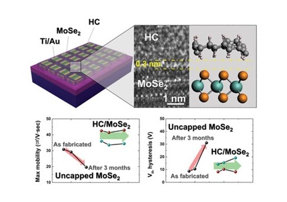
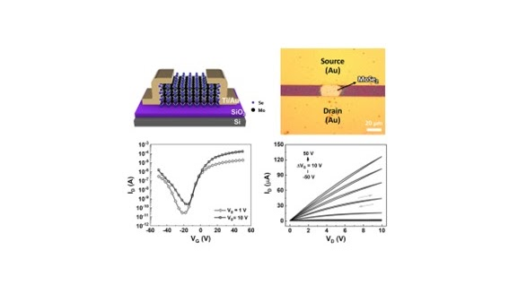
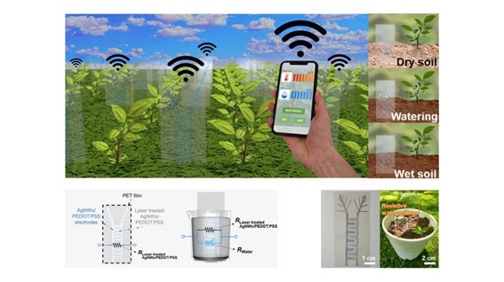
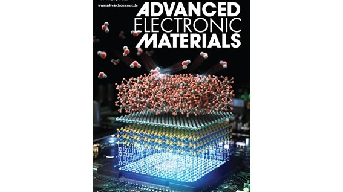
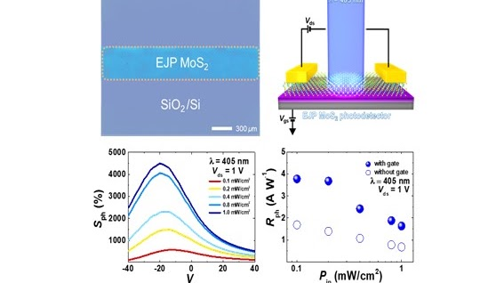
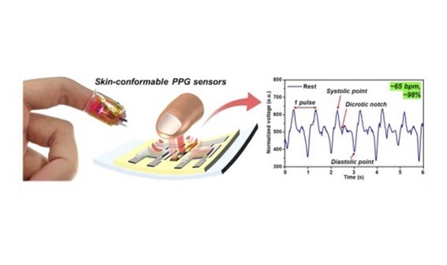

2022
[35] Surface Passivation of Layered MoSe2 via van der Waals Stacking of Amorphous Hydrocarbon, Small, 9월 (2022)
Do-Hyeon Lee, Viet Dongquoc, Seongin Hong (Co-1st), Seung-il Kim, Eunjeong Kim, Su-yeon Cho, Chang-Hwan Oh, Yeongjin Je, Mi Ji Kwon, Anh Hoang Vo, Dong-Bum Seo, Jae Hyun Lee, Sunkook Kim, Eui-Tae Kim, Jun Hong Park

[34] Control of Charge Transport Properties in Molybdenum Dielenide Field-Effect Transistors for Enhanced Noise Margin and Inverter Characteristics, IEEE Transactions on Nanotechnology, 6월 (2022)
Seongjae Kim, Seongin Hong (Corresponding), Hocheon Yoo

[33] Resistive water level sensors based on AgNWs/PEDOT:PSS-g-PEGME hybrid film for agricultural monitoring systems, ACS Omega, 5월 (2022)
Seungho Baek, Jung Joon Lee, Jonghwan Shin, Seongin Hong (Corresponding), Sunkook Kim

[32] (뒤표지 안쪽) Ultrathin Al-Assisted Al2O3 Passivation Layer for High-Stability Tungsten Diselenide Transistors and Their Ambipolar Inverter, Advanced Electronic Materials, 4월 (2022)
Haewon Cho, Yong In Cho, Seongin Hong (Corresponding), Sunkook Kim

[31] Fabrication of highly photosensitive MoS2 photodetector films using rapid electrohydrodynamic-jet printing process, Advanced Electronic Materials, 2월 (2022)
Seongin Hong, Seungho Baek, Thi Thu Thuy Can, Woon-Seop Choi, Sunkook Kim

[30] Skin-conformable photoplethysmogram sensors for energy-efficient always-on cardiovascular monitoring systems, Nano Energy, 2월 (2022)
Bung Ha Kang, Kyungho Park, Mike Hambsch, Seongin Hong, Hyung Tae Kim, Dong Hyun Choi, Jin Hyeok Lee, Sunkook Kim, Hyun Jae Kim
